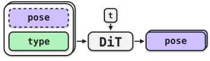
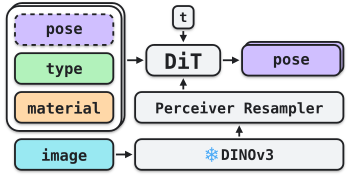

BrickFlow: Connectivity-Guided Brick Reconstruction


Imagine opening a new set of LEGO to find a box full of pieces, but no instructions. All you have is the picture on the front of the box. You can identify a number of parts visible on the surface, but the image only reveals the outside. The internal structure must be inferred: which bricks support which, what fills the spaces you cannot see. Every piece must end up with a precise position and orientation satisfying discrete connector-defined constraints. This is the problem we address: given an inventory of parts and a single image of the completed assembly, recover the 6D pose of each piece.
t = 0 denotes the noise endpoint and t = 1 the data endpoint.
Method
ProcBrick
To learn a prior over how parts fit together, we train a set-conditioned SE(3) flow model on procedurally generated assemblies. To train our assembly prior, we introduce ProcBrick, a procedural generator of LEGO assemblies, and use it to synthesize a dataset of 100 million structures of 100 parts each. Starting with a random seed piece, we iteratively append pieces onto the structure. Rather than sample naively in space, we attempt placements at random compatible connector sites and reject those that collide. Rather than being human-designed or semantically meaningful, these assemblies provide constraint-rich samples from the physical grammar of LEGO assembly.

Flow Matching
We train BrickFlow as a flow model over sets of rigid poses. The model predicts the translational and angular velocity of each part. We use a standard diffusion-transformer (DiT) backbone without SE(3)-equivariant layers. As the input is unordered, no positional encoding is used.
In inventory-conditioned assembly, which we refer also to as pretraining, the model receives only the part inventory and is tasked with predicting some valid assembly. The purpose of this stage is not to understand object semantics, but to learn the geometry of assembly: which parts can connect, how they tend to align, and how local connections compose into global structure. We then finetune this model to inject image conditioning, using 1% as much data.


Connectivity Field
However, while the learned flow captures global structure, it does not enforce connectivity. Small positional errors or drifts can leave two parts misaligned, leading to an assembly where the predicted structure might be qualitatively close, but disconnected. To address this, we introduce a connectivity-field guidance, a scalar energy defined over joint pose whose gradient nudges estimates toward connected configurations.
For each candidate seat h, a pair of compatible connectors on parts a and b, we measure how far the parts are from a valid seat by ch ≥ 0, the mean squared material displacement from their relative pose to the nearest allowed relative transform of the connector family, minimized over its free coordinates (e.g., stud rotation, axle slide).
The energy E of a two-part assembly as a function of where the upper brick is placed on the lower one. It is zero (ink) exactly at valid seats (ch = 0): isolated points where the brick is held rigidly, and arcs where it connects to a single stud and can swivel. The upper brick is colored by how far its material must move to reach a valid seat, with needles showing the direction.
E models each assembly as an electrical network: parts are nodes, and each candidate seat h adds a conductance gh between two parts. Let Ωab denote the effective resistance between parts a and b. The energy is
E = 1N−1 ∑a<b φ(Ωab − (N−1)ρ)
where ρ is a small seat resistance and φ is a smooth hinge that is zero for nonpositive arguments and positive otherwise. If exactly seated connections join all parts, every pair is linked by a path of at most N−1 resistances ρ, so Ωab ≤ (N−1)ρ and both E and its gradient vanish. In contrast, a detached group of parts has a high effective resistance to the rest and is pulled toward it through candidate seats in reach.
Each candidate seat is drawn as a wire, yellow when seated. The disordered estimate consists of seated groups joined only through weak, unseated candidates, so its effective resistances Ωab, and hence E, are high.
Test-Time Guidance
Following diffusion posterior sampling (DPS), we condition on connectedness with the field as the negative log-likelihood, correcting poses in late steps along its gradient at the model's predicted final assembly. No retraining or auxiliary networks are needed to apply the guidance at sampling time during inference.

Paper

Abstract
Given a set of LEGO parts and an image of an assembled object, our task is to infer the pose of each part to assemble the object. In contrast with traditional 3D reconstruction, doing so requires satisfying discrete physical constraints, which provide structure but render the problem combinatorial and highly sensitive to small pose errors. To learn a prior over how parts fit together, we train a set-conditioned SE(3) flow model on procedurally generated assemblies. We then finetune this model to inject image conditioning, using 1% as much data. However, while the learned flow captures global structure, it does not enforce connectivity. To address this, we introduce an analytic connectivity-field guidance to pull predictions toward connected assemblies at test time. Through this, we demonstrate improved build quality with model size, pretraining, and guidance. We make our models and data available for research purposes at https://kulits.github.io/BrickFlow/.
BibTeX
@inproceedings{kulits2026brickflow,
author = {Kulits, Peter and Schmid, Cordelia},
title = {BrickFlow: Connectivity-Guided Brick Reconstruction},
booktitle = {Advances in Neural Information Processing Systems},
year = {2026}
}